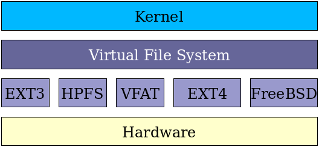

I had windows 10 installed on my laptop because of serious incompatibility of ROG laptops with Linux and my desire to play some games after years of living in bash! This continued for a year and I really like windows 10 cool features like WSL and Hyper-V (with Docker!), however being in love with rolling-release distros and being fed up with windows in the past year. And the fact that I was yearning for terminal, I installed Solus OS earlier this week on a separate partition without removing windows.
And now we get to the point which I wanted to listen to some music which resided on another ntfs volume. And trying to automatically mount the drive with Solus, It occurred to me that how much has really changed in hardware representation in Linux in general. Then it became to write this post about mounting in Linux and new tools for it.
A little background
when you have a storage device (like a hard disk) attached to your computer, Linux kernel, being in charge of talking to hardware, detects the device and creates a file representing the device in /dev like /dev/sda. For each partition that is detected from the device’s partition table, another file is created like /dev/sda1
Some files are also created in sysfs (/sys) in newer kernels and expose more advanced control and info to the user. (which are not talked about in this post)
For actually being able to read/write into a device, you should mount it first. The mount command mounts a storage device or filesystem, making it accessible and attaching it to an existing directory structure.
in order to mount a volume you should invoke the mount command. First, you will create a directory (should be empty)
1
# mkdir /mnt/mydata
Then you mount the volume to that:
1
# mount /dev/sda1 /mnt/mydata
To see all mounted volumes and their options you can use mount command or findmnt (both are provided by util-linux and are available in all distros):
1
2
3
4
5
6
7
8
9
10
11
12
13
14
15
16
17
18
19
20
21
22
23
24
25
26
27
28
29
30
31
32
33
34
35
36
37
38
39
40
41
42
43
44
$ findmnt
TARGET SOURCE FSTYPE OPTIONS
/ /dev/sda4 ext4 rw,relatime,errors=remount-ro
├─/sys sysfs sysfs rw,nosuid,nodev,noexec,relatime
│ ├─/sys/kernel/security securityfs securityfs rw,nosuid,nodev,noexec,relatime
│ ├─/sys/fs/cgroup tmpfs tmpfs ro,nosuid,nodev,noexec,mode=755
│ │ ├─/sys/fs/cgroup/unified cgroup2 cgroup2 rw,nosuid,nodev,noexec,relatime,nsdelegate
│ │ ├─/sys/fs/cgroup/systemd cgroup cgroup rw,nosuid,nodev,noexec,relatime,xattr,name=systemd
│ │ ├─/sys/fs/cgroup/net_cls,net_prio cgroup cgroup rw,nosuid,nodev,noexec,relatime,net_cls,net_prio
│ │ ├─/sys/fs/cgroup/perf_event cgroup cgroup rw,nosuid,nodev,noexec,relatime,perf_event
│ │ ├─/sys/fs/cgroup/pids cgroup cgroup rw,nosuid,nodev,noexec,relatime,pids
│ │ ├─/sys/fs/cgroup/cpu,cpuacct cgroup cgroup rw,nosuid,nodev,noexec,relatime,cpu,cpuacct
│ │ ├─/sys/fs/cgroup/blkio cgroup cgroup rw,nosuid,nodev,noexec,relatime,blkio
│ │ ├─/sys/fs/cgroup/cpuset cgroup cgroup rw,nosuid,nodev,noexec,relatime,cpuset
│ │ ├─/sys/fs/cgroup/freezer cgroup cgroup rw,nosuid,nodev,noexec,relatime,freezer
│ │ ├─/sys/fs/cgroup/devices cgroup cgroup rw,nosuid,nodev,noexec,relatime,devices
│ │ └─/sys/fs/cgroup/memory cgroup cgroup rw,nosuid,nodev,noexec,relatime,memory
│ ├─/sys/firmware/efi/efivars efivarfs efivarfs rw,nosuid,nodev,noexec,relatime
│ ├─/sys/fs/bpf bpf bpf rw,nosuid,nodev,noexec,relatime,mode=700
│ ├─/sys/kernel/debug debugfs debugfs rw,relatime
│ └─/sys/fs/fuse/connections fusectl fusectl rw,relatime
├─/proc proc proc rw,nosuid,noexec,relatime
│ └─/proc/sys/fs/binfmt_misc systemd-1 autofs rw,relatime,fd=36,pgrp=1,timeout=0,minproto=5,maxproto=5,direct
├─/dev devtmpfs devtmpfs rw,nosuid,size=8144172k,nr_inodes=2036043,mode=755
│ ├─/dev/shm tmpfs tmpfs rw
│ │ └─/dev/shm none tmpfs rw,relatime
│ ├─/dev/pts devpts devpts rw,nosuid,noexec,relatime,gid=5,mode=620,ptmxmode=000
│ ├─/dev/mqueue mqueue mqueue rw,relatime
│ └─/dev/hugepages hugetlbfs hugetlbfs rw,relatime,pagesize=2M
├─/run tmpfs tmpfs rw,nosuid,nodev,mode=755
│ ├─/run/media/shahriar/Data /dev/sda2 fuseblk rw,nosuid,nodev,relatime,user_id=0,group_id=0,default_permissions,allow_other,blksize=4096
│ ├─/run/user/1000 tmpfs tmpfs rw,nosuid,nodev,relatime,size=1638552k,mode=700,uid=1000,gid=1000
│ │ └─/run/user/1000/gvfs gvfsd-fuse fuse.gvfsd-fuse rw,nosuid,nodev,relatime,user_id=1000,group_id=1000
│ └─/run/snapd/ns tmpfs[/snapd/ns] tmpfs rw,nosuid,nodev,mode=755
│ └─/run/snapd/ns/chromium.mnt nsfs[mnt:[4026532495]] nsfs rw
├─/tmp tmpfs tmpfs rw,nosuid,nodev
├─/snap/slack/7 /dev/loop0 squashfs ro,nodev,relatime
├─/snap/sublime-text/26 /dev/loop1 squashfs ro,nodev,relatime
├─/snap/core/5145 /dev/loop2 squashfs ro,nodev,relatime
├─/snap/chromium/412 /dev/loop4 squashfs ro,nodev,relatime
├─/snap/core/5328 /dev/loop3 squashfs ro,nodev,relatime
└─/snap/telegram-desktop/270 /dev/loop5 squashfs ro,nodev,relatime
1
2
3
4
5
6
7
8
9
10
11
12
13
14
15
16
17
18
19
20
21
22
23
24
25
26
27
28
29
30
31
32
33
34
35
36
37
38
39
40
41
$ mount
sysfs on /sys type sysfs (rw,nosuid,nodev,noexec,relatime)
proc on /proc type proc (rw,nosuid,noexec,relatime)
devtmpfs on /dev type devtmpfs (rw,nosuid,size=8144172k,nr_inodes=2036043,mode=755)
securityfs on /sys/kernel/security type securityfs (rw,nosuid,nodev,noexec,relatime)
tmpfs on /dev/shm type tmpfs (rw)
devpts on /dev/pts type devpts (rw,nosuid,noexec,relatime,gid=5,mode=620,ptmxmode=000)
tmpfs on /run type tmpfs (rw,nosuid,nodev,mode=755)
tmpfs on /sys/fs/cgroup type tmpfs (ro,nosuid,nodev,noexec,mode=755)
cgroup2 on /sys/fs/cgroup/unified type cgroup2 (rw,nosuid,nodev,noexec,relatime,nsdelegate)
cgroup on /sys/fs/cgroup/systemd type cgroup (rw,nosuid,nodev,noexec,relatime,xattr,name=systemd)
efivarfs on /sys/firmware/efi/efivars type efivarfs (rw,nosuid,nodev,noexec,relatime)
bpf on /sys/fs/bpf type bpf (rw,nosuid,nodev,noexec,relatime,mode=700)
cgroup on /sys/fs/cgroup/net_cls,net_prio type cgroup (rw,nosuid,nodev,noexec,relatime,net_cls,net_prio)
cgroup on /sys/fs/cgroup/perf_event type cgroup (rw,nosuid,nodev,noexec,relatime,perf_event)
cgroup on /sys/fs/cgroup/pids type cgroup (rw,nosuid,nodev,noexec,relatime,pids)
cgroup on /sys/fs/cgroup/cpu,cpuacct type cgroup (rw,nosuid,nodev,noexec,relatime,cpu,cpuacct)
cgroup on /sys/fs/cgroup/blkio type cgroup (rw,nosuid,nodev,noexec,relatime,blkio)
cgroup on /sys/fs/cgroup/cpuset type cgroup (rw,nosuid,nodev,noexec,relatime,cpuset)
cgroup on /sys/fs/cgroup/freezer type cgroup (rw,nosuid,nodev,noexec,relatime,freezer)
cgroup on /sys/fs/cgroup/devices type cgroup (rw,nosuid,nodev,noexec,relatime,devices)
cgroup on /sys/fs/cgroup/memory type cgroup (rw,nosuid,nodev,noexec,relatime,memory)
/dev/sda4 on / type ext4 (rw,relatime,errors=remount-ro)
mqueue on /dev/mqueue type mqueue (rw,relatime)
hugetlbfs on /dev/hugepages type hugetlbfs (rw,relatime,pagesize=2M)
systemd-1 on /proc/sys/fs/binfmt_misc type autofs (rw,relatime,fd=36,pgrp=1,timeout=0,minproto=5,maxproto=5,direct)
debugfs on /sys/kernel/debug type debugfs (rw,relatime)
tmpfs on /tmp type tmpfs (rw,nosuid,nodev)
/var/lib/snapd/snaps/sublime-text_26.snap on /snap/sublime-text/26 type squashfs (ro,nodev,relatime,x-gdu.hide)
/var/lib/snapd/snaps/slack_7.snap on /snap/slack/7 type squashfs (ro,nodev,relatime,x-gdu.hide)
/var/lib/snapd/snaps/core_5145.snap on /snap/core/5145 type squashfs (ro,nodev,relatime,x-gdu.hide)
/var/lib/snapd/snaps/chromium_412.snap on /snap/chromium/412 type squashfs (ro,nodev,relatime,x-gdu.hide)
/var/lib/snapd/snaps/core_5328.snap on /snap/core/5328 type squashfs (ro,nodev,relatime,x-gdu.hide)
/var/lib/snapd/snaps/telegram-desktop_270.snap on /snap/telegram-desktop/270 type squashfs (ro,nodev,relatime,x-gdu.hide)
fusectl on /sys/fs/fuse/connections type fusectl (rw,relatime)
tmpfs on /run/user/1000 type tmpfs (rw,nosuid,nodev,relatime,size=1638552k,mode=700,uid=1000,gid=1000)
gvfsd-fuse on /run/user/1000/gvfs type fuse.gvfsd-fuse (rw,nosuid,nodev,relatime,user_id=1000,group_id=1000)
tmpfs on /run/snapd/ns type tmpfs (rw,nosuid,nodev,mode=755)
nsfs on /run/snapd/ns/chromium.mnt type nsfs (rw)
none on /dev/shm type tmpfs (rw,relatime)
/dev/sda2 on /run/media/shahriar/Data type fuseblk (rw,nosuid,nodev,relatime,user_id=0,group_id=0,default_permissions,allow_other,blksize=4096,uhelper=udisks2)
For unmounting the device you should use umount:
either the device containing the file system or the mount point can be specified.
1
2
3
# umount /dev/sda1
# umount /mnt/mydata
A word about permissions
All device files created in /dev are only accessible to root. Therefore in a general sense, only root can mount stuff. This is very important and you need to keep that in mind. If a filesystem has Linux permission support (linux native filesystems like ext2, ext3, ext4, btrfs, xfs, etc), they are leveraged and files on the drive are treated like other files in your linux system. But some filesystems like FAT derivatives (FAT32, exFAT, etc) are not capable of storing permission information. So by default they become only available too root unless you specify some options at mount time to allow other users. consider this example:
1
2
3
replace xxx with uid/gid of user
# mount -t vfat /dev/sda6 /media/FAT32 -o rw,uid=xxx,gid=xxx
also this neat one-liner which mounts them accessible to your user:
1
$ sudo mount -t vfat /dev/sda6 /media/FAT32 -o rw,uid=$(id -u),gid=$(id -g)
or all users…
1
# mount -t vfat /dev/sda6 /media/FAT32 -o rw,umask=0000
Filesystems
A filesystem controls how data is stored and retrieved. usually necessary options and filesystem are detected by the mount command, but you can specify them manually like this:
1
# mount -t ntfs /dev/sda1 /mnt/mydata
You can view all filesystems supported by your kernel by reading this file:
1
2
3
4
5
6
7
8
9
10
11
12
13
14
15
16
17
18
19
20
21
22
23
24
25
26
27
28
29
30
31
32
33
34
$ cat /proc/filesystems
nodev sysfs
nodev rootfs
nodev ramfs
nodev bdev
nodev proc
nodev cpuset
nodev cgroup
nodev cgroup2
nodev tmpfs
nodev devtmpfs
nodev debugfs
nodev tracefs
nodev securityfs
nodev sockfs
nodev dax
nodev bpf
nodev pipefs
nodev hugetlbfs
nodev devpts
ext3
ext4
iso9660
nodev autofs
xfs
nodev efivarfs
nodev mqueue
btrfs
squashfs
fuseblk
nodev fuse
nodev fusectl
nodev overlay
The first column signifies whether the file system is mounted on a block device. Those beginning with nodev are not mounted on a device. The second column lists the names of the file systems supported.
The mount command cycles through the file systems listed here when one is not specified as an argument.
To see existing filesystems on drives use lsblk command like this:
1
2
3
4
5
6
7
8
9
10
11
12
13
14
15
16
17
18
19
20
$ lsblk -f
NAME FSTYPE LABEL UUID MOUNTPOINT
loop0 squashfs /snap/slack/7
loop1 squashfs /snap/sublime-text/26
loop2 squashfs /snap/core/5145
loop3 squashfs /snap/core/5328
loop4 squashfs /snap/chromium/412
loop5 squashfs /snap/telegram-desktop/270
sda
├─sda1
├─sda2 ntfs Data DCDE47AADE477C30 /run/media/shahriar/Data
├─sda3 swap 9269aa88-3a31-4299-a1ef-f1472750717f [SWAP]
└─sda4 ext4 7fe5feba-8c3d-4fe9-ab0a-20776aabf441 /
sdb
├─sdb1 ntfs Recovery 5436D56136D544A0
├─sdb2 vfat 30D6-1226
├─sdb3
└─sdb4 ntfs 560A18780A1856F9
sr0
(loop devices are apparently being used by snapd. I will write about it in another article, it’s very cool!)
As I said earlier these are filesystem types supported by the kernel, you might ask so where else can a filesystem be implemented? And the answer is FUSE.
Filesystem in Userspace (FUSE) is a mechanism for Unix-like operating systems that lets non-privileged users create their own file systems without editing kernel code. This is achieved by running file system code in user space, while the FUSE kernel module provides only a “bridge” to the actual kernel interfaces.
However you should know that reading/writing on a FUSE filesystem involves a lot more overhead because of code providing filesystem functionality being in userland and each call to a function for that matter will traverse kernel and userland a couple of times more than a regular file operation involving a driver in kernel. Nonetheless it is a very useful feature in a lot of scenarios. (like mounting writable ntfs or a filesystem over the network)
There are also a myriad of other filesystems in the Linux world, such as overlay filesystems , so I suggest you to read references at the end of the post for further reading.
Once we know the basics of mounting in linux, we are going to learn how to automate that and what happens when Linux is booted regarding mounts.
fstab
The fstab file can be used to define how disk partitions, various other block devices, or remote filesystems should be mounted into the filesystem.
Each filesystem is described on a separate line. Fields on each line are separated by tabs or spaces. Lines starting with ‘#’ are comments. Blank lines are ignored.
The mount command will use fstab, if just one of either directory or device is given, to fill in the value for the other parameter. When doing so, mount options which are listed in fstab will also be used. (user option can be set in fstab to allow non-root users to mount)
All specified devices within /etc/fstab will be automatically mounted on startup and when the -a flag is used with mount, unless the noauto option is specified. Devices that are listed and not present will result in an error unless the nofail option is used.
1
2
3
4
5
6
$ cat /etc/fstab
# <device> <dir> <type> <options> <dump> <fsck>
/dev/sda1 / ext4 noatime 0 1
/dev/sda2 none swap defaults 0 0
/dev/sda3 /home ext4 noatime 0 2
It is very recommended to use UUID or other unique identifiers instead of relying on kernel name descriptors (sda1, sdb2, …) as they may change after reboot!
UUID is the preferred method. You can find out the UUID with lsblk -f
1
2
3
4
5
6
7
$ cat /etc/fstab
# <device> <dir> <type> <options> <dump> <fsck>
UUID=CBB6-24F2 /boot vfat defaults 0 2
UUID=0a3407de-014b-458b-b5c1-848e92a327a3 / ext4 defaults 0 1
UUID=b411dc99-f0a0-4c87-9e05-184977be8539 /home ext4 defaults 0 2
UUID=f9fe0b69-a280-415d-a03a-a32752370dee none swap defaults 0 0
Modernizing mounting

In the early 2000s, the first attempt to cope with this was called HAL - Hardware Abstraction Layer, which did what it said on the tin, provided a layer between device nodes and the user of the nodes, so storage devices (and other hardware) can be added and removed without rebooting this system and without rewriting the /etc/fstab file.
After deprecation of HAL, everything gets replaced a dizzying number of times (DeviceKit, devfs, etc) as better approaches are discovered in a fast moving period of hardware development, udev eventually won and was the main thing for the rest of the decade.
When a device is added or removed from the system, the Linux kernel notices and sends out an event. udev is a daemon that waits around listening for these events and then responding accordingly. udev runs in user space not kernel space.
Udisks
Building on top of new technologies (D-Bus, udev), udisks was created. It has modernized the mounting on userland.
udisks provides:
- a daemon, udisksd, that implements well-defined D-Bus interfaces that can be used to query and manipulate storage devices.
- a command-line tool, udisksctl, that can be used to query and use the daemon The actions that a user can perform using udisks are restricted using polkit.
It is the tool that handles all the work and permission checking when you simply click on the fancy usb flash drive icon that has appeared on your desktop after inserting it into your PC.
We will cover the use of udisksctl for basic mounting/unmounting in this post. But it is important to know that all functionality provided here is just a wrapper around D-Bus calls which is easily programmable will be very useful in storage management automation. (like the clicking mentioned, etc)
To see a list of disks attached to the system (serial numbers are replaced):
1
2
3
4
5
6
7
$ udisksctl status
MODEL REVISION SERIAL DEVICE
--------------------------------------------------------------------------
Samsung SSD 860 EVO 500GB XXXXXXX XXXXXXXXXXX sda
SanDisk SD8S XXXXXXX XXXXXXXXXXX sdb
SlimtypeDVD A XXXXXXX XXXXXXXXXXX sr0
To see detailed info about disk:
1
2
$ udiskctl dump
<output not shown due to length>
To actually mount a filesystem using this new tool:
1
udisksctl mount -b /dev/sdb1
And then to unmount:
1
udisksctl unmount -b /dev/sdb1
systemd mount units
Considering the merger of udev and systemd, and the ubiquity of systemd in modern Linux distros. It is recommended to ditch old-school habits and start having fun with cool new functionality made available to use.
Adding entries in fstab is no longer the main way to mount a device at startup. In fact all entries in /etc/fstab are converted to systemd mount units at boot.
Example systemd .mount file:
1
2
3
4
5
[Mount]
What=/dev/disk/by-uuid/9269aa88-3a31-4299-bbb1-4e528a89d222
Where=/mnt/mydata
Type=ext4
Options=defaults
Important: Mount units must be named after the mount point directories they control.
Example: the mount point /home/lennart must be configured in a unit file home-lennart.mount.
So we create a file like this:
1
2
3
4
5
6
7
8
9
10
# vim /etc/systemd/system/mnt-mydata.mount
[Unit]
Description=Mount Some of my files to empty mydata dir
[Mount]
What=/dev/disk/by-uuid/9269aa88-3a31-4299-bbb1-4e528a89d222
Where=/mnt/mydata
Type=ext4
Options=defaults
Of course you should signal systemd to load the unit file after you’re done editing:
1
2
# systemctl daemon-reload
# systemctl start mnt-mydata.mount
You can view state of the mount like other units:
1
# systemctl status mnt-mydata.mount
Important: If you want it to be mounted on each boot, you should also include an [Install] section in the unit file__:
1
2
3
4
5
6
7
8
9
10
11
[Unit]
Description=Mount Some of my files to empty mydata dir
[Mount]
What=/dev/disk/by-uuid/9269aa88-3a31-4299-bbb1-4e528a89d222
Where=/mnt/mydata
Type=ext4
Options=defaults
[Install]
WantedBy=multi-user.target
And the enable the unit to be started at boot:
1
# systemctl enable mnt-backups.mount
I hope you liked this post. There are still things that were left out of this post about mounting in Linux. But I leave them up to you to explore if you are interested. Overlay filesystems, FUSE and AutoFS are useful and are recommended for reading.
References
- https://wiki.archlinux.org/index.php/fstab
- https://www.freedesktop.org/wiki/Software/udisks/
- https://zeth.net/2014/05/28/modern_mounting_with_udisks2.html
- fstab manpage → https://manpages.debian.org/stretch/mount/fstab.5.en.html
- https://wiki.archlinux.org/index.php/file_systems
- https://www.centos.org/docs/5/html/5.1/Deployment_Guide/s2-proc-filesystems.html
- https://wiki.archlinux.org/index.php/persistent_block_device_naming
- https://en.wikipedia.org/wiki/File_system
Comments powered by Disqus.